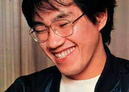

A truly magnificant artist
Needing money after quitting his job at the age of 23, Toriyama entered the manga industry by submitting a work to an amateur contest in Kodansha's Weekly Shōnen Magazine, which he had randomly picked up in a coffee shop. The timing did not line up for that contest, but another shōnen magazine, Weekly Shōnen Jump, accepted submissions for their Newcomer Award every month. Kazuhiko Torishima, who would become his editor, read and enjoyed Toriyama's manga, but it was not eligible to compete because it was a parody of Star Wars instead of an original work. Torishima sent the artist a telegram and encouraged him to keep drawing and sending him manga.This resulted in Wonder Island, which became Toriyama's first published work when it was published in Weekly Shōnen Jump in 1978
However, it came in last place in the readers survey. Toriyama later said that he had planned to quit manga after getting paid, but because Wonder Island 2 (1978) was also a "flop," his stubbornness would not let him and he continued to draw failed stories for a year; claiming around 500, including the published Today's Highlight Island (1979). He said he learned a lot during this year and even had some fun. When Torishima told him to draw a female lead character, Toriyama hesitantly created 1979's Tomato the Cutesy Gumshoe, which had some success. Feeling encouraged, he decided to draw another female lead and created Dr. Slump.
Dr. Slump, which was serialized in Weekly Shōnen Jump from 1980 to 1984, was a huge success and made Toriyama a household name. It follows the adventures of a perverted professor and his small but super-strong robot Arale. In 1981, Dr. Slump earned Toriyama the Shogakukan Manga Award for best shōnen or shōjo manga series of the year.An anime adaptation began airing that same year, during the prime time Wednesday 19:00 slot on Fuji TV. Adaptations of Toriyama's work would occupy this time slot continuously for 18 years—through Dr. Slump's original run, Dragon Ball and its two sequels, and finally a rebooted Dr. Slump concluding in 1999. By 2008, the Dr. Slump manga had sold over 35 million copies in Japan.
Torishima suggested that, as Toriyama enjoyed kung fu films, he should create a kung fu shōnen manga. This led to the two-part Dragon Boy, published in the August and October 1983 issues of Fresh Jump. It follows a boy, adept at martial arts, who escorts a princess on a journey back to her home country. Dragon Boy was well-received and evolved to become the serial Dragon Ball in 1984. But before that, The Adventure of Tongpoo was published in Weekly Shōnen Jump's 52nd issue of 1983 and also contained elements that would be included in Dragon Ball.
Find Out More `Here`